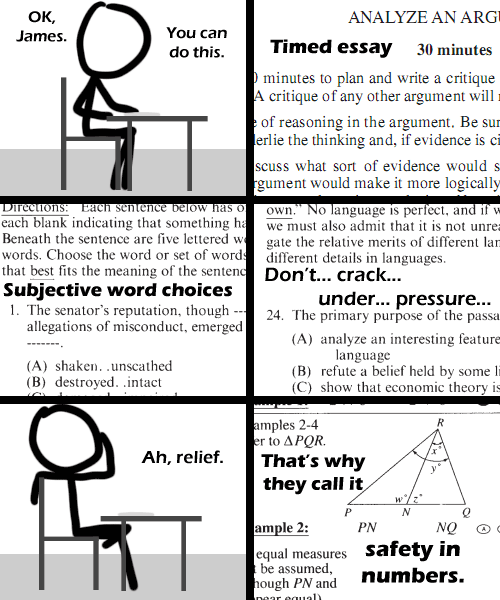

Comic JK 485
When I Feel Like It
⇤
<
?
>
⇥

⇤
<
?
>
⇥
Forum
.
RSS
.
Digg
.
Facebook
.
Reddit
.
Twitter
.
Stumbleupon
Update: preliminary results are 710 verbal, 800 math. Safety in numbers! Pretty cool, I took it a while back and got a range of 1450-1600, screwed up the writing though.. Forget your thoughts on number 485 here. THESE ARE NOT THE DROIDS YOU ARE LOOKING FOOOOOOR!!! >What am I doing here? >> These are not the 'roids we are looking for! Good luck, but you don't need it. I took it and got 550 Math, 800 English. If you want to hire me post your email here and I'll email you my penis :D heh. i did that once. then i went to jail, so it did not matter GRE is Cake! Ok, ok, the numbers part is, at least... > The GRE is a SPY! >> This is news? >>> Not necessarily >>>> Mammaluigi >GRE is a lie? Good luck buddy! Getting a DhP?? Good luck. Don't fail! Friday the 14th. Nice I bombed your mom guys.... this comic is officially the end of xkcd. >Really? >>You can't see mammaluigi when you commonly visit this website? Shame. Good luck! As a geek you are required to get 800 on alphabetical or we will all laugh at you... forever. ;) <- gay smiley Again, why can't the comic appear in the RSS feed, thus requiring less clicking and allowing for more laughing? Yay GRE! (apparently, seeing as I don't even know what the GRE is...) - Negative Twoth >We could tell, Idiot... >Graduate Records Exam Good luck, have fun! I love laughing at mammaluigi trying to study for the math part. That'll teach them for not paying attention to basic algebra. >Yeah, haha, sucker. Too busy drinking and getting laid and having fun to take the time to not suck at the portion of the test that _his_ prospective admissions commitee/employer won't care about >>Guys, there's a comic about this that makes you both look like idiots. >>>Link or number please? >>>>Oh come on, you don't remember that one? Best of luck to me ----------------------------------------- ^ troll infected^ v not troll infected v ----------------------------------------- Update: preliminary results are 710 verbal, 800 math. Safety in numbers! Enter your thoughts on number 485 here. Please, no spamming, trolling, or phreaking. Good luck, but you don't need it. I took it and got 550 English, 800 Math. If you want to hire me post your email here and I'll email you my resume :D heh. i did that once. then i got a job, so it did not matter GRE is Cake! Ok, ok, the numbers part is, at least... > The GRE is a LIE! >> This is news? >>> Not necessarily Good luck buddy! Getting a PhD?? Good luck. Don't fail! Friday the 13th. Nice I bombed the test guys.... this comic is officially the end of comicjk. >Really? >>You can't see a troll when you commonly visit this website? Shame. Good luck! As a geek you are required to get 800 on numerical or we will all laugh at you... forever. ;) Again, why can't the comic appear in the RSS feed, thus requiring less clicking and allowing for more laughing? Yay GRE! (apparently, seeing as I don't even know what the GRE is...) - Negative Twoth >Graduate Records Exam Good luck, have fun! I love laughing at mammaluigi trying to study for the math part. That'll teach them for not paying attention to basic algebra. >Yeah, haha, suckers. Too busy drinking and getting laid and having fun to take the time to not suck at the portion of the test that _their_ prospective admissions commitee/employers won't care about >>Guys, there's a comic about this that makes you both look like idiots. >>>Link or number please? >>>>Oh come on, you don't remember that one? Best of luck to you Maybe your mother will finally accept you, although she doesn't need to as she has my dick.